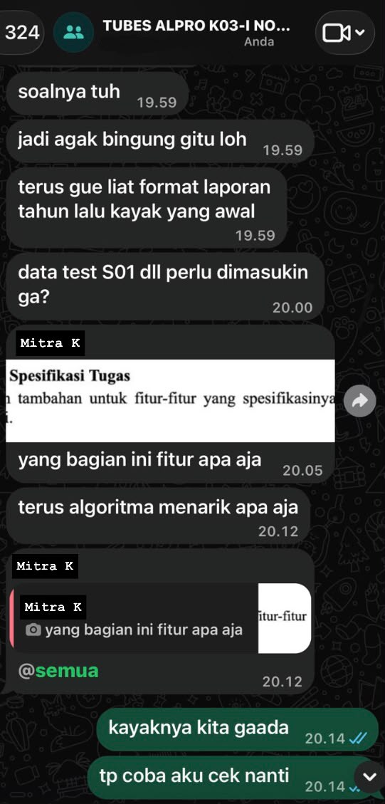

Character Map
Kompetensi target
Membedakan person, personality, dan character serta memilih objective, repertoire, dan language yang sesuai.
Evidence wajib
- Lima character dari sedikitnya tiga domain kehidupan.
- Objective, responsibility, repertoire, dan risiko tiap character.
- Satu contoh perubahan language ketika character berubah.
Buka contoh fiktif Minggu 1 untuk melihat tingkat kekonkretan evidence dan analisis. Jangan menyalin contoh sebagai evidence pribadi.
Nama Mahasiswa : Rosianna Maria Aviv Silalahi Tanggal Pengerjaan : 26 September 2026
Bagian A: Peta 5 Domain Kehidupan
| Domain Kehidupan | Peran yang Saya Ambil | Siapa yang Saya Jumpai | Tanggung Jawab Utama Komunikasi |
|---|---|---|---|
| 1. Diri Sendiri | Pembelajar mandiri yang sedang membangun kebiasaan belajar konsisten | Diri sendiri saat menghadapi deadline dan materi baru | Mengatur motivasi dan memisahkan kegagalan teknis dari identitas |
| 2. Keluarga / Sahabat | Anak rantau dari Kota Batam | Orang tua dan keluarga di rumah | Menjaga kedekatan meski jarak jauh dan memberi kabar yang jujur |
| 3. Profesional / Akademik | Anggota tim proyek Tugas Besar Algoritma dan Pemrograman 1 | Rekan satu kelompok tugas besar | Menyelesaikan deliverable tepat waktu dan selaras dengan tim |
| 4. Komunitas / Kelompok | Anggota aktif komunitas teknis (GDGOC ITB, URO, dan HMIF) | Sesama anggota komunitas di masing-masing organisasi | Berkontribusi ide, ikut kegiatan/latihan, dan berkolaborasi dengan gaya kerja yang beragam |
| 5. Dunia / Publik | Mentor OSKM ITB | Mentee OSKM ITB | Membimbing dengan jujur dan bertanggung jawab dan menyesuaikan komunikasi dengan kebutuhan mentee |
Lima character
| Domain dan character | Person & relationship | Objective & responsibility | Repertoire & language | Risiko dan latihan |
|---|---|---|---|---|
| Intra-Self — pembelajar mandiri | Diri sendiri saat menghadapi bug atau materi yang sulit dipahami | Memisahkan kesalahan teknis dari identitas dan tetap termotivasi lanjut | Journaling singkat; “Bagian mana yang bisa aku perbaiki dan bukan siapa yang salah?” | Terlalu keras menilai diri sendiri; latihan: catat satu hal yang sudah berhasil sebelum mengevaluasi kekurangan |
| Family — anak rantau | Orang tua di Batam | Menjaga kedekatan tanpa membuat mereka khawatir dan tetap jujur soal kesulitan | Video call rutin, cerita ringan, mendengarkan kabar rumah | Cenderung meringkas/menyembunyikan kesulitan karena terbiasa mandiri; latihan: sengaja cerita satu kesulitan nyata setiap minggu dan bukan cuma hasil akhir |
| Work — anggota tim proyek | Rekan satu kelompok Tugas Besar Algoritma dan Pemrograman 1 | Menyelesaikan bagian tugas tepat waktu dan terintegrasi dengan bagian rekan lain | Laporan progres yang jelas, bertanya spesifik dan dokumentasi rapi lewat commit message | Terlalu fokus pada hasil/efisiensi sehingga terkesan dingin; latihan: buka diskusi dengan satu pertanyaan personal sebelum masuk ke pembagian tugas |
| Community — anggota GDGOC ITB, URO, dan HMIF | Sesama anggota komunitas di tiap organisasi | Berkontribusi ide dan berkolaborasi dengan berbagai gaya kerja di tiga komunitas berbeda | Diskusi kelompok, brainstorming terbuka, mendengarkan sebelum menyimpulkan | Cenderung cepat menyampaikan solusi duluan; latihan: tunggu dua pendapat lain sebelum menyampaikan pandangan sendiri |
| World — Mentor OSKM ITB | Mentee OSKM ITB | Membimbing dengan jujur dan bertanggung jawab dan menyesuaikan komunikasi dengan kebutuhan mentee | Mendengarkan aktif, pertanyaan terbuka, dan memberi contoh dari pengalaman sendiri tanpa menggurui | Terlalu banyak memberi instruksi alih-alih membimbing mentee menemukan jawaban sendiri; latihan: bertanya terlebih dahulu “menurutmu gimana?” sebelum memberi saran |
Bagian B: Analisis Kontras Dua Peran Utama
Peran A: Anggota Tim Proyek — Peran B: Anak / Sahabat Pendengar. Dua peran ini kontras karena satu berorientasi hasil dan tenggat dan satu berorientasi kehadiran emosional.
| Unsur Komunikasi | Peran A: Anggota Tim Proyek | Peran B: Anak / Sahabat Pendengar |
|---|---|---|
| 1. Tujuan Tugas & Relasi | Menyelesaikan bagian tugas sesuai kesepakatan dan menjaga kepercayaan tim | Membuat orang terdekat merasa didengar dan bukan sekadar diberi solusi |
| 2. Repertoar Utama | Melaporkan progres, bertanya klarifikasi, dan menegosiasikan pembagian kerja | Mendengarkan aktif, bertanya terbuka, dan memvalidasi perasaan |
| 3. Pilihan Bahasa & Nada | Ringkas, jelas, dan fokus pada fakta dan tenggat waktu | Hangat, tidak buru-buru menyimpulkan, dan memberi ruang untuk cerita |
| 4. Respons yang Harus Dibaca | Tanda keterlambatan, kebingungan teknis, dan kebutuhan bantuan | Nada suara dan hal yang tidak terucap secara eksplisit |
| 5. Tindakan yang Diharapkan | Bagian tugas selesai dan terintegrasi dengan bagian lain | Orang tersebut merasa lega atau didukung setelah bercerita |
| 6. Relasi yang Harus Dirawat | Kepercayaan profesional dan rasa saling andal dalam tim | Kedekatan personal dan rasa aman untuk terbuka |
Bagian C: Eksplorasi Kepribadian dan Sasaran Pertumbuhan
Nilai Utama: Ketelitian, kejujuran, dan keandalan (dapat dipercaya menyelesaikan apa yang sudah disepakati).
Kekuatan Komunikasi: Cenderung berpikir terstruktur sebelum bicara sehingga pesan yang disampaikan biasanya jelas dan langsung ke inti masalah.
Pola Hambatan Otomatis: Saat di bawah tekanan, cenderung langsung masuk ke mode “cari solusi” tanpa memvalidasi perasaan lawan bicara sehingga kadang terkesan dingin atau terburu-buru.
Ketegangan Peran & Kepribadian: “Saya cenderung fokus menyelesaikan masalah secepat mungkin secara efisien, tetapi peran saya sebagai anggota tim/sahabat menuntut saya untuk berhenti sejenak dan mendengarkan dulu sebelum menawarkan solusi.”
Sasaran Pertumbuhan Perilaku Terukur: “Ketika rekan tim atau teman sedang menjelaskan hambatannya, saya akan menahan diri untuk tidak langsung menawarkan solusi selama satu menit pertama. Saya akan merangkum apa yang saya dengar dan mengonfirmasi pemahaman saya terlebih dahulu, selama 4 minggu ke depan.”
Umpan Balik Jujur: “Menurutku, sekarang kamu lebih sering bertanya terlebih dahulu sebelum memberikan saran jadi cukup terasa perbedaannya. Tetapi terkadang kamu masih suka untuk memotong pembicaraan saat aku belum selesai cerita, terutama bila topiknya teknis.” - K.
Konteks performance
Tanggal dan setting: Proses ini berlangsung selama kurang lebih enam minggu, dari Senin, 27 April 2026 hingga Jumat, 5 Juni 2026 menjelang tenggat pengumpulan Tugas Besar Algoritma dan Pemrograman 1. Sebagian besar koordinasi dan pengerjaan dilakukan secara mandiri di kost masing-masing anggota, sementara diskusi dan penyelarasan proses tim sering dilakukan secara tatap muka di Student Lounge GKU 1 ITB Jatinangor.
Persons dan relationship: Rekan satu kelompok Tugas Besar Algoritma dan Pemrograman 1 (Mitra A, Mitra D, Mitra K, dan Mitra N), dengan Mitra K berperan sebagai penanggung jawab modul yang menjadi dependency langsung dari bagian yang saya kerjakan.
Objective dan initial state: State awal — modul yang jadi tanggung jawab Mitra K belum selesai dua hari sebelum tenggat dan saya sempat berasumsi Mitra K “kurang disiplin”. Objective — beralih dari asumsi menjadi kejelasan hambatan dan kesepakatan kerja baru, tanpa merusak hubungan tim.
Episode yang dianalisis
Saya: “Sebelum kita atur ulang jadwal, boleh cerita apa yang bikin bagian ini masih tertahan?”
Mitra K: “Aku masih bingung di bagian penanganan error-nya, coba beberapa kali masih gagal test case.”
Saya: “Oke, berarti hambatannya di logic error handling, bukan soal waktu ya?”
Mitra K: “Iya, betul.”
Saya: “Aku bisa bantu review bagian itu malam ini atau kita pair programming sebentar. Mana yang lebih membantu?”
Respons Mitra K mengubah repertoire saya dari sekadar menagih perkembangan menjadi problem solving bersama. Kesepakatan akhirnya: kami pair programming dua jam, modul selesai sebelum tenggat dan test case ikut disesuaikan.
Ada satu ketidakpastian yang saya sadari saat itu: saya bukan ketua kelompok, jadi secara otoritas saya sebenarnya tidak berwenang penuh mengubah tenggat internal tim. Saya memutuskan menawarkan bantuan personal (pair programming) dulu tanpa menunggu keputusan ketua kelompok dengan trade-off mengorbankan waktu belajar saya sendiri malam itu dan risiko yang saya terima sadar karena dampaknya ke keberhasilan tim lebih besar daripada risiko ke jadwal pribadi saya. Saya juga memperhatikan Mitra K sempat menjawab lebih pelan dan ragu-ragu (“masih bingung”) yang merupakan sinyal bahwa masalahnya mungkin lebih dalam dari sekadar teknis, jadi saya memilih pair programming (bukan hanya review) agar bisa membaca reaksinya langsung dan menyesuaikan bantuan secara real-time.
Evidence
Screenshot spesifik dari momen pair programming dengan Mitra K tidak tersimpan karena diskusi dan penyelesaian error handling terjadi secara langsung (tatap muka). Repository Tugas Besar juga sudah tidak lagi dapat diakses untuk melampirkan commit log terkait. Sebagai gambaran pola kolaborasi dengan Mitra K pada periode pengerjaan yang sama, berikut chat koordinasi terkait saling membantu mengecek pekerjaan sebelum tenggat:

Kontribusi pribadi: dalam episode pair programming yang dianalisis, saya berperan sebagai driver/navigator saat menyusun ulang logic penanganan error pada modul yang menjadi tanggung jawab Mitra K, sementara Mitra K menjelaskan konteks bug dan memvalidasi hasil test case secara langsung di layar yang sama. Bagian yang murni kontribusi saya adalah perbaikan logic error handling tersebut, bukan keseluruhan modul yang tetap menjadi tanggung jawab Mitra K.
Perubahan language
Sebagai anggota tim proyek, saya akan berkata, “Bagian ini butuh selesai sebelum integrasi, hambatannya di mana?” Sebagai sahabat/anak, saya akan berkata, “Mau cerita dulu atau langsung cari solusinya bareng?” Nilai inti saya (mau membantu dan menyelesaikan masalah) tetap sama, tapi tanggung jawab dan tindakan yang saya ambil berbeda tergantung peran.
Analisis komunikasi
| Elemen | Evidence dan analisis |
|---|---|
| Person & character | Mitra K awalnya saya lihat lewat stereotype “kurang disiplin”. Setelah bertanya, fakta yang muncul adalah hambatan teknis (error handling), bukan soal kedisiplinan. Person dipetakan ulang berdasarkan konteks nyata, bukan asumsi awal. |
| Objective & state | State awal: modul belum selesai, tenggat dua hari lagi. Objective: mengganti asumsi dengan kejelasan hambatan dan kesepakatan kerja baru, sambil menjaga relasi tim. |
| Repertoire & language | Repertoire bergeser dari “menagih progres” menjadi bertanya klarifikasi lalu menawarkan opsi bantuan. Bahasa tetap ringkas dan fokus solusi, sesuai character anggota tim proyek. |
| Response & adaptation | Jawaban Mitra K (“bingung di error handling”) langsung mengubah rencana saya dari sekadar reminder tenggat menjadi tawaran pair programming. |
| Agreement/action | Kesepakatan eksplisit: pair programming malam itu, modul selesai dan ter-push sebelum tenggat. |
| Relationship outcome | Kepercayaan tim terjaga karena masalah diselesaikan bersama, bukan lewat teguran sepihak; relasi kerja tetap positif setelah episode ini. |
| Power & uncertainty | Saya menyadari tidak punya otoritas formal mengubah tenggat sehingga solusi yang saya tawarkan (bantuan personal) sengaja dipilih agar tidak melampaui wewenang saya, sambil tetap melaporkan hasilnya ke ketua kelompok setelahnya. |
Penggunaan AI
- Alat dan peran AI: Claude digunakan untuk membantu merapikan draf awal, terutama pada bagian analisis kontras peran, konteks performance, evidence, dan feedback, berdasarkan konteks aktivitas nyata (kuliah, organisasi, proyek) yang saya berikan sendiri.
- Prompt/instruksi penting: Saya meminta Claude untuk menyempurnakan kalimat yang sudah saya tulis agar lebih rapi dan jelas, serta memberikan penilaian terhadap jawaban saya seperti apakah sudah cukup detail dan sesuai dengan yang diminta rubrik atau masih perlu diperbaiki.
- Bagian yang digunakan/diubah/ditolak: Saya menggunakan hasil penyempurnaan kata-kata dan struktur kalimat dari Claude, tetapi seluruh isi faktual (nama Mitra, tanggal, lokasi kejadian, isi percakapan, dan hasil kesepakatan) tetap berasal dari pengalaman saya sendiri. Beberapa bagian saya revisi ulang setelah dibaca, misalnya detail organisasi di Bagian A dan penyesuaian nama Mitra di beberapa bagian yang sempat tidak konsisten. Saya sengaja membatasi peran AI hanya pada penyempurnaan kalimat dan bukan pada penentuan isi evidence atau skor self-assessment, karena penilaian terhadap fakta, konteks relasi, dan kejujuran posisi saya dalam tim adalah hal yang hanya bisa saya pertanggungjawabkan sendiri.
- Pemeriksaan accuracy, privacy, authority: Nama rekan tim disamarkan menjadi “Mitra A”, “Mitra K”, dan seterusnya demi privasi. Detail organisasi (GDGOC, URO, HMIF, KAT ITB) saya periksa ulang kesesuaiannya dengan keanggotaan nyata saya sebelum dimasukkan ke evidence.
- Yang tetap saya pelajari sebagai manusia: Latihan membedakan story (“kurang disiplin”) dari fact (modul belum masuk sesuai jadwal) sebelum bereaksi, serta menimbang batas otoritas saya sendiri dalam tim. Ini yang tidak bisa digantikan AI karena butuh kejujuran menilai posisi dan reaksi saya sendiri.
Feedback dan tindak lanjut
Feedback yang diterima: “Menurut Mitra A, cara saya menangani situasi ini sudah cukup baik dan meyakinkan, tetapi saya masih perlu melatih kesabaran serta terus memperdalam pemahaman teknis saya.” -A
Adaptation/replay: Setelah menyadari reaksi awal saya (menganggap rekan “kurang disiplin”) adalah story bukan fact, saya mengubah pendekatan dari menagih menjadi bertanya klarifikasi dulu dan hasilnya kesepakatan tercapai lebih cepat dan relasi tim tetap terjaga.
Next practice: Berlatih menahan diri untuk tidak langsung menyimpulkan/menawarkan solusi sebelum benar-benar memahami hambatan orang lain, sesuai sasaran pertumbuhan di Bagian C.
Self-assessment
| Dimensi | Skor 1–4 | Evidence singkat |
|---|---|---|
| Person & Character | 4 | Person, character, dan relationship dipetakan di lima domain; perubahan power (saya bukan pemegang otoritas tenggat) dan context (hambatan teknis, bukan kedisiplinan) dibaca eksplisit |
| Objective & State | 4 | State awal, state tujuan, dan ketidakpastian (apakah hambatan murni teknis atau ada faktor lain) dikelola sekaligus |
| Repertoire, Language & AI | 4 | Repertoire beradaptasi luwes (dari menagih menjadi problem-solving) dengan batas AI yang jelas dan alasan pemakaiannya dijelaskan |
| Response & Adaptation | 4 | Sinyal lemah (jawaban ragu-ragu Mitra K) terbaca dan mengubah pilihan dari sekadar review menjadi pair programming langsung |
| Agreement, Action & Relationship | 4 | Trade-off (waktu pribadi vs kebutuhan tim), batas otoritas, dan rencana lapor ke ketua kelompok dikelola secara eksplisit |
Total: 20/20 — Lanjut. Seluruh dimensi menunjukkan analisis yang melampaui deskripsi dasar: power/otoritas, uncertainty, trade-off, dan sinyal lemah semuanya dibaca dan direspons secara sadar dalam satu episode.
Assessment dosen
Skor: — / 20 Evidence yang mendukung: — Prioritas perbaikan: — Keputusan: Belum dinilai / Perlu revisi / Tercapai